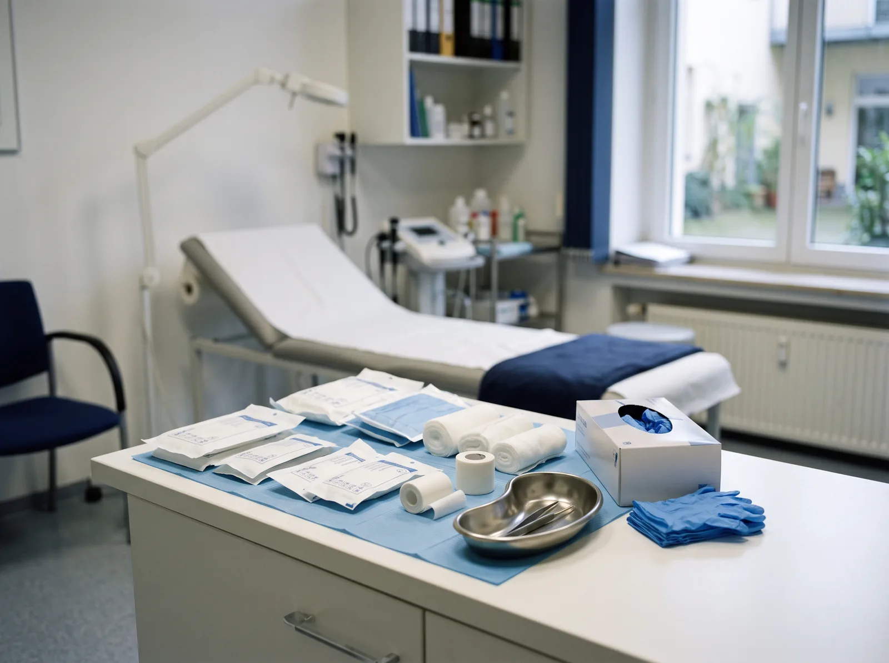
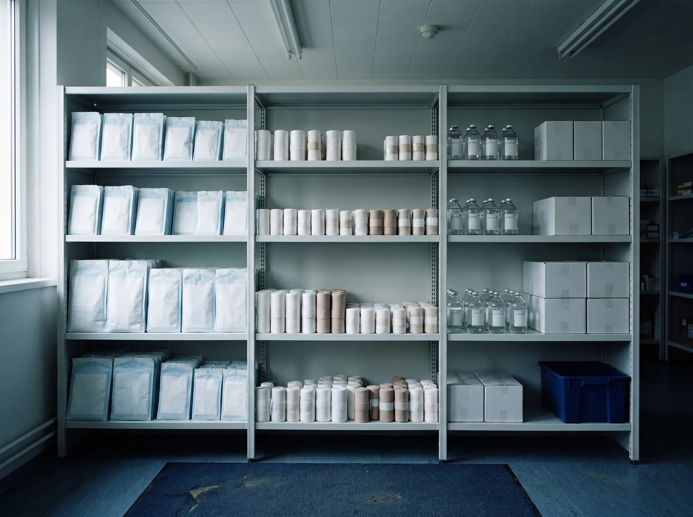
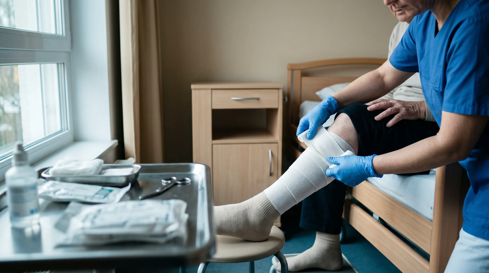
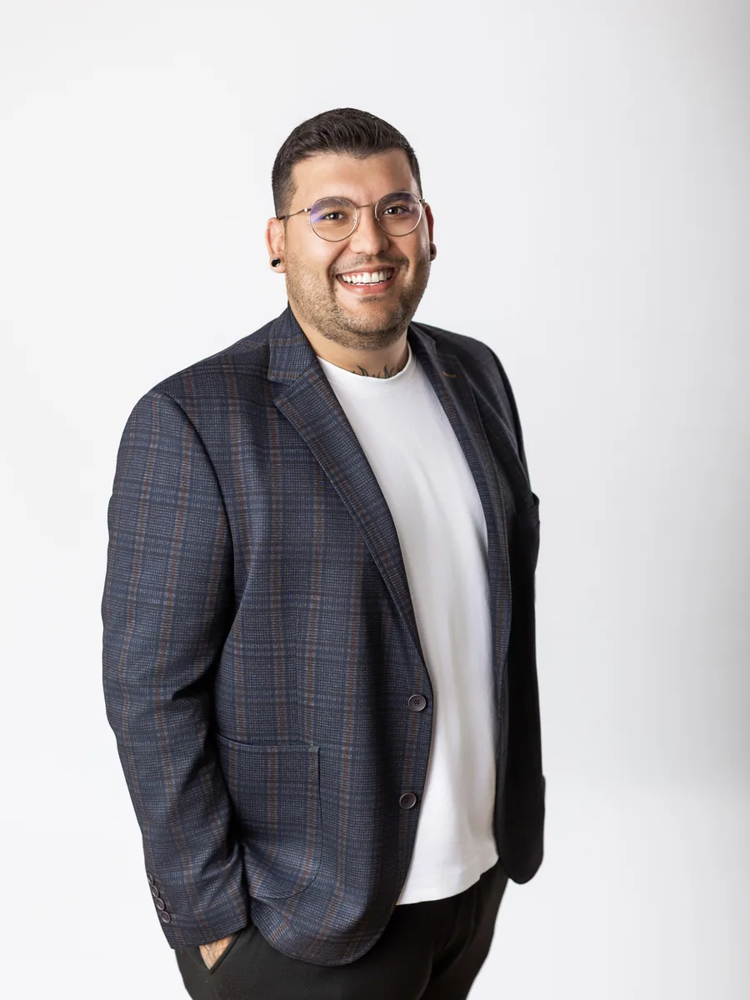

Für ambulante Pflegedienste, Pflegeeinrichtungen, Arztpraxen und Kliniken im Münsterland und im nördlichen Ruhrgebiet
Wundmanagement und Homecare, das Sie komplett aus der Hand geben
Wir schätzen die Wunde bei Ihnen vor Ort ein, dokumentieren digital, wählen das Material herstellerneutral aus und halten Ihren Vorrat voll. In der Regel sind wir innerhalb von 24 Stunden bei Ihnen. Für Ihre Einrichtung, Ihre Praxis und Ihre Patienten kostenfrei.
Unverbindlich, ohne Vertrag, ohne Abnahmepflicht. Mo bis Fr, 8 bis 17 Uhr.
Wir können inzwischen einfach alles aus der Hand geben.
In 24 Stunden vor Ort
Wundexperte ICW
Kostenfrei für Ihre EinrichtungAbrechnung über die Versorgung
24 h
in der Regel bis zur Wundvisite bei Ihnen vor Ort
0 €
für Einrichtung, Praxis und Patient
ICW
zertifizierte Wundexperten im Team
Mo bis Fr
8 bis 17 Uhr, feste Ansprechpartner statt Hotline
Der Alltag
Wundfälle kosten Sie nicht Fachwissen, sondern Zeit
Ihr Team weiß, wie ein Verbandwechsel geht. Das Problem sitzt woanders: in der Organisation drumherum. Genau die nehmen wir Ihnen ab.
- Der Materialschrank ist Freitagnachmittag leer, und die Wunde wartet nicht bis Montag.
- Drei Kollegen dokumentieren nach drei Systematiken, und die Prüfung kommt.
- Eine Wunde stagniert seit Monaten, und niemand hat Zeit, systematisch nachzufassen.
- Der Sprechstundenbedarf ist gesprengt, und keiner weiß genau, woran.
- Ein Patient wird morgen entlassen, und die Versorgung zu Hause steht noch nicht.
Zahlen zur Wundversorgung in Deutschland
Chronische Wunden dauern länger, als die meisten denken
130 Tage
So lang ist die mediane Behandlungsdauer einer chronischen Wunde in Deutschland. Nach 180 Tagen sind noch 33 Prozent in Behandlung.
Quelle: DAK Versorgungsreport 2024
9 Prozent
So viele der Betroffenen mit regelmäßigem Verbandwechsel durch einen ambulanten Pflegedienst erhalten eine spezialisierte Wundversorgung.
Quelle: DAK Versorgungsreport 2024
bis 3 Jahre
So lange kann es dauern, bis eine chronische Wunde sachgerecht diagnostiziert ist.
Quelle: BVMed, Entwurf einer Nationalen Wundstrategie, 04.03.2025
Was sich 2026 im Rahmen ändert
Das BEEP-Gesetz erweitert seit dem 1. Januar 2026 die Befugnisse qualifizierter Pflegefachkräfte in der Wundversorgung, die Leistungskataloge sind dabei noch nicht vollständig geregelt. Für ambulante Pflegedienste gilt seit dem 1. Juli 2026 ein neues Qualitätsprüfungssystem des Medizinischen Dienstes. Und die Erstattung sonstiger Produkte zur Wundbehandlung ist bis zum 31. Dezember 2026 unverändert geregelt, danach ist die Rechtslage offen. Wir behalten diese Termine für Sie im Blick.
Stand: August 2026
Zielgruppen
Wofür brauchen Sie uns?
Leistungen
Was wir übernehmen
Wundmanagement und Wunddokumentation
Wir beurteilen akute und chronische Wunden fachgerecht und dokumentieren jeden Verlauf lückenlos. Die Therapieempfehlung ist evidenzbasiert, die Produktauswahl herstellerneutral.
Dazu gehören die typischen chronischen Wundbilder: Ulcus cruris, Dekubitus und diabetisches Fußsyndrom, ebenso postoperative Wunden und Wundheilungsstörungen. Wir erfassen Wundstatus, Exsudat und Wundgrund, dokumentieren den Verbandwechsel und stimmen die Kompressionstherapie mit der Praxis ab.
Wundvisite vor Ort
Material, Bestellung und Vorratskontrolle
Sprechstundenbedarf
Homecare-Management
Schulungen für Ihr Team
Für ambulante Pflegedienste und Pflegeeinrichtungen
Wundfälle abgeben, Dokumentation behalten
Ihre Situation
Ihre Fachkräfte sind knapp, und Wundfälle binden die teuersten am längsten. Die Dokumentation muss lückenlos sein, weil sie im Zweifel Ihre rechtliche Absicherung ist. Und das Material muss da sein, wenn die Tour läuft, nicht zwei Tage später.
Was wir übernehmen
- Wundbeurteilung vor Ort, in der Regel innerhalb von 24 Stunden
- Digitale Foto- und Verlaufsdokumentation, die einer MD-Prüfung standhält
- Herstellerneutrale Produktauswahl nach Wundphase, nicht nach Lieferantenvertrag
- Rezeptanforderung, Bestellung, Lieferung und Vorratskontrolle
- Abstimmung mit der behandelnden Praxis
- Schulung Ihres Teams, vor Ort oder digital
Was bei Ihnen bleibt
- Die Pflege am Patienten. Wir arbeiten beratend und koordinierend, wir übernehmen keine Pflege.
- Die Entscheidung, ob und wie weit wir zusammenarbeiten. Kein Vertrag, keine Abnahmepflicht.
- Ihr bestehender Lieferant, wenn Sie das wollen. Sie können mit einem einzelnen Fall anfangen.
100% Zuverlässigkeit. 24 Stunden Erreichbarkeit. Schnelle Unterstützung, wenn sie gebraucht wird.
Wundvisite für Ihre Einrichtung anfragen
Unverbindlich, ohne Vertrag.
Für Arztpraxen
Sprechstundenbedarf und Wunddokumentation
Ihre Situation
Wundversorgung bindet Praxiszeit, die Sie für andere Patienten brauchen. Beim Sprechstundenbedarf entscheidet die richtige Auswahl darüber, ob am Ende eine Wirtschaftlichkeitsprüfung im Raum steht. Und die Erstattungsregeln für Produkte zur Wundbehandlung ändern sich weiter.
Was wir übernehmen
- Auswahl und Organisation von Verbandstoffen und Verbrauchsmaterialien, budgetorientiert
- Wundbeurteilung und vollständige Dokumentation als Grundlage für Ihre Verordnung
- Bestellung, Lieferung und Vorratskontrolle, damit Ihre MFA nicht hinterhertelefoniert
- Abstimmung mit dem versorgenden Pflegedienst und mit Angehörigen
- Ein Blick auf die Erstattungslage, inklusive der offenen Regelung ab 2027
Was bei Ihnen bleibt
- Diagnose und Therapieentscheidung. Vollständig.
- Die Verordnung. Wir liefern die Einschätzung, Sie entscheiden.
- Die Wahl der Produkte. Unsere Empfehlung ist eine Empfehlung, keine Vorgabe.

Für Kliniken und Entlassmanagement
Anschlussversorgung, die am Entlasstag steht
Ihre Situation
Sie können die Anschlussversorgung nur für einen kurzen Zeitraum verordnen. Was danach passiert, entscheidet darüber, ob der Patient in zwei Wochen wieder bei Ihnen sitzt. Und ob am Montag ein Anruf bei Ihnen landet.
Was wir übernehmen
- Übernahme der Wundversorgungs-Organisation ab dem Entlasstag
- Materialbereitstellung, damit zu Hause nichts fehlt
- Einweisung von Pflegedienst, Patient und Angehörigen
- In der Regel innerhalb von 24 Stunden vor Ort
- Rückmeldung an Sie, wenn Sie eine wollen
Was bei Ihnen bleibt
- Entlassplan und ärztliche Anordnung.
- Die Wahlfreiheit des Patienten. Wir sind ein Angebot, keine Zuweisung.
- Ihr Ablauf. Wir passen uns an, nicht umgekehrt.
Sie organisieren die Versorgung zu Hause?
Wenn Sie oder ein Angehöriger eine chronische Wunde, ein Stoma, einen Katheter oder eine Ernährungssonde versorgen müssen, übernehmen wir die Organisation: Beratung, Materialauswahl, Bestellung und Lieferung nach Hause, abgestimmt mit dem Hausarzt und dem Pflegedienst. Für Sie ist das kostenfrei. Sie dürfen den Versorger frei wählen und Sie dürfen wechseln, auch wenn Ihnen im Krankenhaus jemand zugeteilt wurde.
Rufen Sie uns an: 02591 89188513
Mo bis Fr, 8 bis 17 Uhr
Ablauf
So läuft die Zusammenarbeit ab
01
Sie melden sich
5 Minuten02
Wir kommen vor Ort
in der Regel in 24 Stunden03
Die Praxis bekommt eine Grundlage
selber oder nächster Werktag04
Wir halten die Versorgung am Laufen
laufend
Kostenlose Wundvisite anfragen
Unverbindlich, ohne Vertrag. Mo bis Fr, 8 bis 17 Uhr.
Rollen und Abgrenzung
Wer entscheidet was
Wir arbeiten ausschließlich beratend und koordinierend. Die medizinische Entscheidung bleibt beim Arzt, die Pflege bleibt bei Ihrem Team.
| Der Arzt | Ihre Pflegekräfte | MediWex |
|---|---|---|
| stellt die Diagnose | versorgen den Patienten täglich | beurteilt die Wunde fachlich |
| entscheidet über die Therapie | beobachten den Verlauf | dokumentiert digital und lückenlos |
| verordnet Material und Leistungen | melden Veränderungen | empfiehlt Material, herstellerneutral |
| trägt die medizinische Verantwortung | bleiben die Bezugsperson | bestellt, liefert, kontrolliert den Vorrat |
| schult auf Wunsch das Team |
Kosten und Abrechnung
Warum unsere Leistung für Sie kostenfrei ist
Beratung, Wundbeurteilung, Dokumentation und die komplette Koordination sind für Pflegeeinrichtungen, Arztpraxen und Patienten kostenfrei. Das ist kein Einführungsangebot, sondern die Struktur der Branche: Abgerechnet wird die Versorgung mit Verband- und Hilfsmitteln auf Grundlage der ärztlichen Verordnung, gegenüber der Kranken- beziehungsweise Pflegekasse. Unsere Arbeit steckt in dieser Versorgung. Sie zahlen dafür nichts extra, und Sie zahlen auch nicht mehr, wenn wir mehr beraten.
- Keine Vertragsbindung.
- Keine Abnahmepflicht.
- Kein Herstellerzwang.
Einen Fall kostenlos einschätzen lassen
Ein Fall, ein Termin, keine Umstellung. Sie entscheiden danach, ob mehr daraus wird.
Prüfsicherheit
Dokumentation, die der Prüfung standhält
Wundanamnese, Wundstatus, Verlauf, Maßnahmen und Übergabe an die Praxis, vollständig und mit Datum. Genau das, was der Medizinische Dienst sehen will.
DNQP-Expertenstandard
Wundexperten ICW
Visite18.06.2026, 09:40
LokalisationUnterschenkel links
Wundmaß4,2 × 3,1 × 0,4 cm
Exsudatmäßig, serös
VersorgungSchaumverband, 2× wöchentlich
Einwilligung Fotodokumentiert
Fotoverlauf


Beispielhafte Darstellung einer Verlaufsdokumentation. Wundfotos werden nur mit dokumentierter Einwilligung erstellt.
Zertifiziert nach ICW
In unserem Team arbeiten zertifizierte Wundexperten ICW. Das Zertifikat gilt fünf Jahre und muss durch Fortbildung rezertifiziert werden. Es ist kein Titel, den man einmal erwirbt und dann behält.
Auf Basis des Expertenstandards
Wir arbeiten nach dem DNQP-Expertenstandard „Pflege von Menschen mit chronischen Wunden", 2. Aktualisierung von Juni 2025. Damit passt unsere Dokumentation in Ihr Qualitätsmanagement, statt daneben zu liegen.
Wundfotos: Einwilligung und Zugriffsschutz
Wir fotografieren nur mit dokumentierter Einwilligung, die jederzeit widerrufen werden kann. Bei Einwilligungsunfähigkeit über den rechtlichen Vertreter. Die Aufnahmen laufen nicht über private Handys.
Ihre Ansprechpartner, mit Namen und Gesicht
Michelle Bronzel
Jaqueline Küpper

Luca Küpper
Stephan Froböse
Referenzen
Das sagen Pflegedienste, die mit uns arbeiten
Wir können inzwischen einfach alles aus der Hand geben.
Pflegedienst Caroline Alloheim Mobil, Selm
100% Zuverlässigkeit. 24 Stunden Erreichbarkeit. Schnelle Unterstützung, wenn sie gebraucht wird.
Pflegedienst Nest, Gelsenkirchen
Schulungen
Schulungen für Pflegeteams und Praxisteams
Seit dem 1. Januar 2026 dürfen qualifizierte Pflegefachkräfte Wunden eigenständig einschätzen und Versorgungsmaterial anordnen. Mehr Befugnis heißt auch: Qualifikation muss belegbar sein. Genau da setzen unsere Fortbildungen an.
Themen: Wundmanagement und Wundbeurteilung, Verbandstoffe und moderne Wundauflagen, Dokumentation und Fotodokumentation, Hygiene, Homecare-Abläufe.
Formate: vor Ort bei Ihnen im Haus oder digital. Auf Ihr Team zugeschnitten, nicht von der Stange.
Schulung für Ihr Team anfragen
Ansprechpartnerin: Jaqueline Küpper
Einzugsgebiet
Münsterland und nördliches Ruhrgebiet
Wir sitzen in Lüdinghausen im Kreis Coesfeld und versorgen von dort aus Einrichtungen, Praxen und Patienten in Lüdinghausen, Selm, Nordkirchen, Olfen, Ascheberg, Senden, Coesfeld, Dülmen, Werne, Lünen, Bergkamen, Hamm, Münster, Castrop-Rauxel, Recklinghausen, Marl, Datteln, Waltrop, Herten und Gelsenkirchen.
MediWex GmbH
Wallgasse 2
59348 Lüdinghausen
02591 89188513
info@mediwexplus.de
Mo bis Fr, 8 bis 17 Uhr
Häufige Fragen
Häufige Fragen zu Wundmanagement und Homecare
Zusammenarbeit und Kosten
Wie schnell sind Sie vor Ort?
In der Regel innerhalb von 24 Stunden nach Ihrer Anmeldung. Sie erreichen uns montags bis freitags von 8 bis 17 Uhr telefonisch, per E-Mail und auf Wunsch per WhatsApp. Sie haben feste Ansprechpartner, keine wechselnde Hotline.
Was kostet uns die Zusammenarbeit?
Nichts. Beratung, Wundbeurteilung, Dokumentation und Koordination sind für Pflegeeinrichtungen, Arztpraxen und Patienten kostenfrei. Abgerechnet wird die Versorgung mit Verband- und Hilfsmitteln auf Grundlage der ärztlichen Verordnung gegenüber der Kranken- beziehungsweise Pflegekasse.
Brauchen wir einen Vertrag?
Nein. Keine Vertragsbindung, keine Abnahmepflicht, keine Mindestmenge. Sie beauftragen uns fallweise oder dauerhaft.
Was passiert mit unserem bisherigen Lieferanten?
Sie müssen nichts umstellen. Sie können mit einem einzelnen Fall anfangen und danach entscheiden, ob mehr daraus wird. Eine parallele Zusammenarbeit ist möglich, es gibt keine Ausschließlichkeit.
Rollen, Verantwortung, Datenschutz
Wer entscheidet über die Therapie?
Der Arzt. Wir arbeiten ausschließlich beratend und koordinierend. Wir beurteilen die Wunde, dokumentieren den Verlauf und empfehlen Material. Diagnose, Therapieentscheidung und Verordnung bleiben in der Praxis.
Ersetzt das unsere Pflegefachkraft?
Nein. Ihr Team leistet die tägliche Versorgung und bleibt die Bezugsperson. Wir bringen die spezialisierte Beurteilung dazu und nehmen die Organisation ab. Wir übernehmen keine Pflegeleistungen.
Wie werden Wundfotos gespeichert und wer hat Zugriff?
Wir fotografieren nur mit dokumentierter Einwilligung, die jederzeit widerrufbar ist. Bei Einwilligungsunfähigkeit erfolgt die Einwilligung über den rechtlichen Vertreter. Zugriff hat nur, wer an der Versorgung beteiligt ist. Die Aufnahmen laufen nicht über private Handys.
Sind Sie an einen Hersteller gebunden?
Nein. Wir wählen nach Wundphase, Verträglichkeit und Wirtschaftlichkeit aus, nicht nach Lieferantenvertrag. Wenn Sie ein Produkt bevorzugen, mit dem Ihr Team eingearbeitet ist, arbeiten wir damit.
Leistungen und Gebiet
Übernehmen Sie Bestellung und Vorratskontrolle?
Ja, vollständig. Auswahl, Rezeptanforderung, Bestellung, Lieferung und regelmäßige Vorratskontrolle. Mengen ändern wir nie ohne Absprache mit Ihnen.
Gilt das auch für Sprechstundenbedarf?
Ja. Für Arztpraxen organisieren wir Verbandstoffe und Verbrauchsmaterialien budgetorientiert und praxisgerecht, inklusive Bestellung und Vorratskontrolle.
Versorgen Sie auch Patienten zu Hause?
Ja. Wundversorgung, Stomaversorgung, Kathetermaterial und enterale Ernährung, abgestimmt mit Hausarzt und Pflegedienst. Für Patienten und Angehörige ist die Beratung kostenfrei.
Kann ich meinen Versorger frei wählen?
Ja. Auch wenn Ihnen im Krankenhaus ein Versorger zugeteilt wurde, dürfen Sie wechseln. Wir organisieren die Übergabe so, dass keine Versorgungslücke entsteht.
Welche Gebiete versorgen Sie?
Das Münsterland und das nördliche Ruhrgebiet, von Lüdinghausen und Coesfeld über Werne und Lünen bis Recklinghausen und Gelsenkirchen. Wenn Sie unsicher sind, ob Ihr Ort dabei ist: rufen Sie an, wir sagen es Ihnen in einem Satz.
Bieten Sie Schulungen an?
Ja, für Pflegeteams und Praxisteams, vor Ort oder digital. Themen sind Wundmanagement, Verbandstoffe, Dokumentation, Hygiene und Homecare-Abläufe. Ansprechpartnerin ist Jaqueline Küpper.
Stand: August 2026
Anfrage
Ein Fall, ein Termin, ein fester Ansprechpartner
Sagen Sie uns kurz, worum es geht. Wir melden uns am selben Werktag und kommen in der Regel innerhalb von 24 Stunden vorbei. Kostenfrei, unverbindlich, ohne Vertrag.
Michelle Bronzel
MediWex GmbH
Wallgasse 2, 59348 Lüdinghausen
02591 89188513
info@mediwexplus.de
Mo bis Fr, 8 bis 17 Uhr